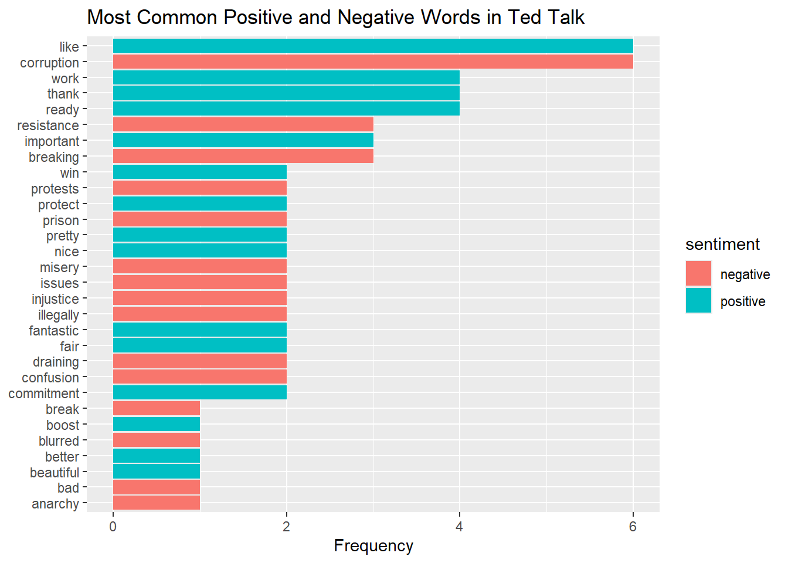
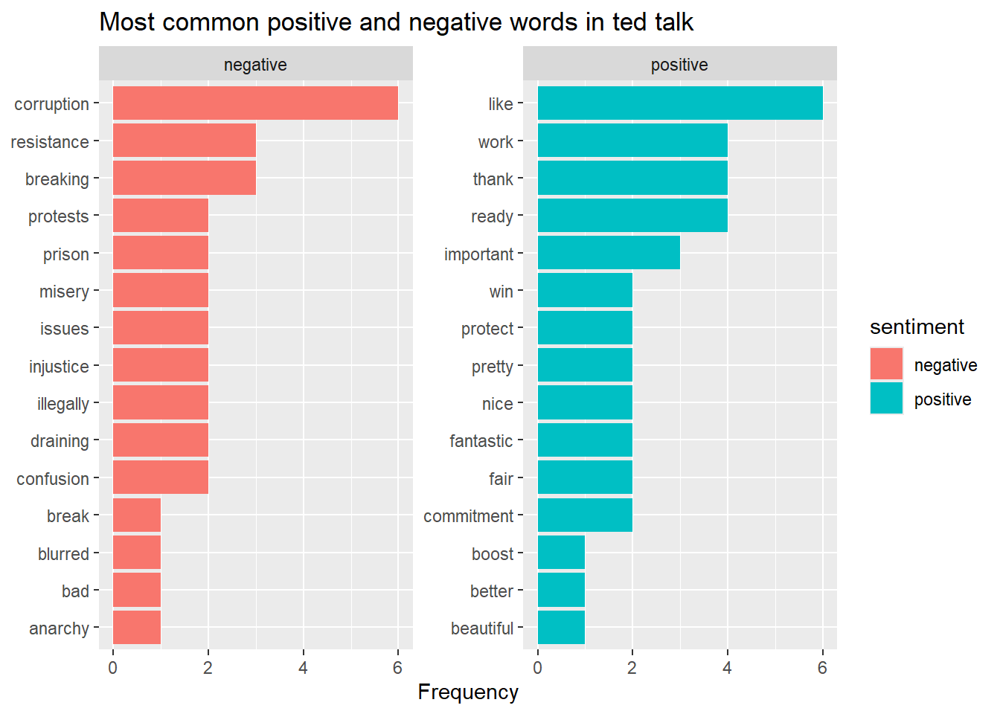

# install.packages("tidyverse")
# install.packages("tidytext")
library(tidyverse)
library(tidytext)AH-RHET101 Workshop 4: Sentiment analysis in R
Spring 2025
Sentiment Analysis of a TED talk
Objective: In this workshop, you will learn how to perform a sentiment analysis on a TED Talk using R and the bing sentiment lexicon.
Sentiment analysis is a method used to determine the emotional tone behind a body of text using Natural Language Processing (NLP). It involves analysing the words in a text to classify whether the sentiment expressed is positive, negative, neutral or a specific emotion.
In this workshop, you will be analysing a TED Talk by Ketakandriana Rafitoson on democracy to identify the emotional tones present in the speaker’s words and see how these emotional expressions can be interpreted to gain a deeper understanding of the speaker’s message and intent.
By the end of this session, you will have gained experience with tokenising text, applying sentiment lexicons, and visualising the sentiment results. In the homework assignment, you will apply this knowledge to conduct a more complex sentiment analysis using the nrc sentiment lexicon and compare the result across different TED talks on democracy.
Step 1: Starting up the R Script and R project
Open your AH-RHET101 R project from the previous session and start a new R script for the sentiment analysis case study.
Load, and if needed install, the following packages by placing and running the following code in your R script:
Step 2: Tokenising the text into sentences
Before you can do any analysis, RStudio needs to know the text file you want to work. For this you need to import the text into the environment. To do this, you have to create a new object (ted_lines). This will store the text that is located in the .txt file by using the function readLines().This is a function that reads the text file line by line and stores it in a vector.
To use readLines() you have to specify the path of the file. In this case, the file is located on GitHub, and you can import it directly without having to download it using the following import code.
You can use view() to open the object to understand what has happened after running the code.
ted_lines <- readLines("https://github.com/ucrdatacenter/projects/raw/refs/heads/main/AH-RHET101/2025h1/Texts/Ted_Talk_Ketakandriana_Rafitoson.txt")
view(ted_lines)However, when you view the object ted_lines, you will see that the text is not easily readable in its current format. This is because the text is stored in a single vector. It would be easier if the text was stored in a table format, where each sentence is stored in a separate row.
To convert a vector into a tibble in r, you can use the function as_tibble(). However, this will store all sentences into a single row. To split the text into sentences and have each sentence stored in a new row you also have to use the function unnest_tokens() (You can learn more about the function by opening the helpfile by typing ?unnest_tokens in your console.)
unnest_tokens() can tokenise, which means break up texts into, words, characters, ngrams, sentences, lines, paragraphs and more. As you are interested in sentences, the output and token should be set to “sentences” within the function. Additionally, it is useful to keep capitalisation, which can be done by setting the argument to_lower to equal FALSE. The result should be stored in a new object, which you can title sentences_ted. View() the result to see what has happend.
sentences_ted <- ted_lines |>
as_tibble() |>
unnest_tokens(output = sentences, input = value, token = "sentences", to_lower = FALSE)
view(sentences_ted)Step 3: Tokenising the text into words
Now that the text has been tokenised into sentences, you and other people can process the text more easily, which is useful when you want to extract sentences that contain specific words from the text as you will be doing later.
One way to know which specific words to extract, is by conducting a sentiment analysis. The goal of this is to get a general overview of the emotional loadings or sentiment that a text conveys. This is typically done by looking at the words in a text and see whether they have a positive, negative, neutral, or other emotional connotation.
To do this, you should tokenise the text again but this time into words. You can reuse the code used above but change “sentences” into”words” as that is the new token you want.
words_ted <- ted_lines |>
as_tibble() |>
unnest_tokens(output = word, input = value, token = "words")
view(words_ted)When you view the list of words, you will notice that it contains 1,864 elements. This is because it contains a lot of duplicate words. For some tasks, however, it can be useful to work with word types, and not word instances. Word types are the unique words in a text, and word instances are all words in a text including duplicates. To obtain the word types of a text you can use the function unique() which will return the word list but without any duplicates. Indeed, the word list now contains only 658 elements.
words_ted_unique <- words_ted |>
unique()
view(words_ted_unique)Step 4: Performing Bing sentiment analysis
Now, that the words and sentences of the ted talk have been properly tokenised, a sentiment analysis can be performed. To do this, you have to import an existing sentiment lexicon, which is a list of words that have been pre-labelled as positive, negative, neutral or a specific emotion.
To load a sentiment lexicon in your script you can use the get_sentiment() function and store it as a new object. R offers four different sentiment lexicons for this function: afinn, bing, nrc, and loughran.
For this workshop you will be using the bing sentiment lexicon, which contains 6786 English words which have been labelled to be either positive or negative. Note that this list is not all-encompassing.
bing <- get_sentiments("bing")
view(bing)Now that you have the list of words of the Ted talk, as well as a sentiment lexicon, it is time to see whether any of the words in the talk match with a word that is part of the sentiment lexicon.
To do this you have to combine the two tibbles, using the function inner_join(). More specifically, inner_join() will join the word values of the tibbles of words_ted and bing together, and keep only those that overlap. The result will be stored in a new object, which you can title words_ted_bing.
In addition, it is nice to know how many times a specific word and sentiment occur together, for this you can use the function count() You can view the results using the view() function.
words_ted_bing <- words_ted |>
inner_join(bing) |>
count(word, sentiment)
view(words_ted_bing)Step 5: Making a visualisation
Although, the resulting word list already provides insight into the different words that are included in the talk, it would be nice if you can interpret the result in one glance with the help of a visualisation.
Indeed, a visualisation will make it much clearer whether more positive or negative words have been included, and which words have been used the most.
Currently, the list of words is ordered alphabetically and contains 88 different words. The visualisation would be more clear if it only includes the top 15 words of each sentiment, and orders them from most used to least used.
You can do this in r by using the function slice_max(). This function will order the words by the number of times they occur and only keep the words with the highest values. To elaborate, n = 15 specifies that you would like to keep the top 15 words with the highest frequency. The argument order_by specifies that the words should be ordered based on their count (n) instead of alphabetically. The argument by specifies that the words should be grouped based on their sentiment, so you get both the top 15 positive words and the top 15 negative words. Lastly, with_ties = FALSE specifies that you want only 15 elements even if there are other elements that have the same amount.
words_ted_bing_arranged <- words_ted_bing |>
slice_max(n = 15, order_by = n, by = sentiment, with_ties = FALSE) Now that the appropriate words have been selected for the visualisation, you can create it. For this geom_col() can be used, which is a type of bar chart. Within geom_col() you can specify that you would like the count (n) on the x-axis, the word on the y-axis ordered from highest to lowest frequency (y = reorder(word, n)), and the sentiment as the fill, so positive and negative words have different colours. The title and labels can be specified using the labs() function. NULL means that the y-axis will not be labelled.
words_ted_bing_arranged |>
ggplot() +
#Specify the aestethics in the geom_col, reorder() makes sure that the words with the highest frequency are printed at the top.
geom_col(aes(x = n, y = reorder(word, n), fill = sentiment)) +
#Label the graph properly
labs(
title = "Most Common Positive and Negative Words in Ted Talk",
x = "Frequency",
y = NULL
)
Step 6: (If time): Improve the visualisation using facet_wrap
If time: Currently, the visualisation can easily be interpreted to see which positive and negative words have been used the most. However, to make this even clearer the negative and positive words can be split from one another. You can do this in r by using the facet_wrap() function, which will split the visualisation into two separate graphs, in this case based on their sentiment. The argument scales = “free” specifies that the y-axis should be free, so the words do not overlap with one another.
words_ted_bing_arranged |>
ggplot() +
geom_col(aes(x = n, y = reorder(word, n), fill = sentiment)) +
labs(
title = "Most common positive and negative words in ted talk",
x = "Frequency",
y = NULL
) +
facet_wrap(~sentiment, scales = "free")
Step 7.1: Interpreting results and investigating usage of like
Now, that we have a clear visualisation, we can see whether we can draw any interesting conclusions from the results.The most common positive word is “like”,
However, in English, the word “like” can be used as a noun or verb where it has a positive connotation but it can also be used as a filler or adverb, where it denotes a similarity. As a result, sentences containing “like” should be investigated.
This can be done using the filter(), detect_str() and pull() function. For str_detect(), you specify the pattern you are looking for in a string of text, using a regular expression in this case “like”. Unfortunately, discussing the exact details of regular expressions falls outside the scope of this workshop.
However, it is good to know that it is a way of specifying patterns in text. str_detect() also requires an input, which in our case are the words. If a word matches the pattern it returns TRUE otherwise it will return FALSE. Using filter() it will only keep sentences that match the mattern.
sentences_ted |>
#Only keep sentences that contain the word "like"
filter(str_detect(sentences, "like")) |>
pull(sentences)[1] "And of course, power holders don't like that."
[2] "And we do believe that citizen assemblies can be a powerful way for restoring democracy, not only in Madagascar, but elsewhere around the world.The first aim of those assemblies is to ensure that everyone understands what a true democracy looks and feels like, and then to give them practical tools in order to engage them into practical actions."
[3] "And here I would like to say that in those assemblies, we really go beyond lofty ideals of democracy, because what we want to trigger is a collective strategy for really improving people's lives.So those who join us are totally free to pick whatever issue matters to them and any burning question."
[4] "We would like the revolution to happen now, but we have to be patient, OK?"
[5] "And I would like people to feel that they have the power within their hands."
[6] "So how do you, like, talk to us about that and talk to us about your personal commitment." Look at the sentences, is “like” being used in a positive manner here or does it take on a different meaning? Indeed, when you look closely you can interpret this from the following sentences:
- Here like is negated by the use of “don’t”, this is a downside of the current sentiment analysis as it cannot take this into account.
- Here like is an adverb. 3, 4, 5: Here like is used as a verb which arguable could be positive
- Here like is used as a filler.
This shows that sentiment analysis are not 100% accurate and are there to give us a general idea of the sentiment of the text. However, human inspection is still needed to interpret and verify the results.
Step 7.2: Interpreting results and investigating usage of corruption
Luckily, many English words do only have one function, such as the word “corruption”. It would be interesting to see how the speaker user the word “corruption” to appeal for their case and whether any arguments or ethos, pathos, logos can be detected. This again can be done using the functions used above.
sentences_ted |>
#Only keep sentences that contain the word "corruption"
filter(str_detect(sentences, "corruption")) |>
pull(sentences)[1] "Politicians promise us the moon, but they just deliver dirty governance, corruption and misery.We don't have a fair and just society where people have a say on decisions made on their behalf."
[2] "The most important thing – The important thing is to keep preventing dictatorship from happening in my country and to keep fighting against corruption at all levels."
[3] "In these assemblies, when people bring their issues,we are also connecting them with safe whistleblowing platforms for reporting corruption."
[4] "KR: I mean, we are constantly attacked, you know,because of our anti-corruption commitment, because we are also outspoken about things happening in Madagascar."
[5] "So we have this unit of investigative journalism, and we are conducting a lot of investigations, and there is one on sexual corruption happening in schools and universities in Madagascar, that we are really proud of because we exposed that."
[6] "So raising this awareness drives people to sue the perpetrators of sexual corruption to court." Look at the results, how does the speaker use the words corruption to frame the current political government?
Some of the relevant findings may be: This talk frames the current politicians and political system in a very negative light, which becomes clear from words like “corruption”, ’dictatorship”. Moreover, those who are against corruption seem to then be “attacked”. The words bring out emotion and there is a great contrast between the the politicians and “we” and “I”. Indeed, “we are also outspoken” or “we are also connecting” show that the speaker views itself in a more positive light fighting against this corruption.
Step 7.3: Interpreting results and investigating usage of democracy
Lastly, as this talk is about democracy, it can be interesting to see how this talk frames democracy. In our first workshop we discussed a digital humanities paper that investigated how parliamentary debates conceptualise democracry.
The three most common cases were: 1.) Viewing democracy as a value 2.) Believing democracy is under threat and in need of defence 3.) Using democracy as leverage, trying to make a point persuasive by linking it to democracy.
Does this talk frame it similarly to one of these points or something else? For this you can reuse the code above but changes “corruption” into “democracy”.
sentences_ted |>
#Only keep sentences that contain the word "democracy"
filter(str_detect(sentences, "democracy")) |>
pull(sentences) [1] "And we don't have democracy."
[2] "The idea is just to gather ordinary people from all walks of life around the idea of learning about democracy, deliberating about important public questions and then taking actions together."
[3] "And we do believe that citizen assemblies can be a powerful way for restoring democracy, not only in Madagascar, but elsewhere around the world.The first aim of those assemblies is to ensure that everyone understands what a true democracy looks and feels like, and then to give them practical tools in order to engage them into practical actions."
[4] "Because, you know, there is so much confusion around the notion of democracy."
[5] "So we need to tell people how it is really, and we need to fill this knowledge gap about democracy."
[6] "And here I would like to say that in those assemblies, we really go beyond lofty ideals of democracy, because what we want to trigger is a collective strategy for really improving people's lives.So those who join us are totally free to pick whatever issue matters to them and any burning question."
[7] "And the gathering style is really a mix between World Café deliberation and a caucus.And we always start with very basic questions such as what is democracy?"
[8] "These are neighbors.These are friends, ordinary people, just, you know, from various profiles, but brought together by the idea and dream of a better democracy and a more just society."
[9] "And we all know today that democracy is backsliding around the world.But we need a remedy."
[10] "It's high time that we restore democracy back." Some of the relevant findings may be: This Ted Talk seems to think that democracy is under threat and needs to be “restored” or there is a knowledge gap to be “filled” or it is “high time” that it is “restored back”, or there is need for a “remedy”. The usage of democracy in point 7 could be said to either value democracy, or is used as leverage.
Step 8: If time: Assignment
Choose another positive and negative word from the list and investigate its usage in the text. What does this word tell you about the speaker’s message and intent?
Step 9. Homework 4
Currently, the sentiment analysis only uses “positive” and “negative” words. However, R has another sentiment lexicon titled “nrc” which includes 10 different sentiments that are based on emotion. This could perhaps show more specific information. Additionally, you can learn compare results between texts to see whether there is a pattern. This is something you will be exploring in the homework assignment.
You can find the homework assignment here. Download it and save it in your current project folder.